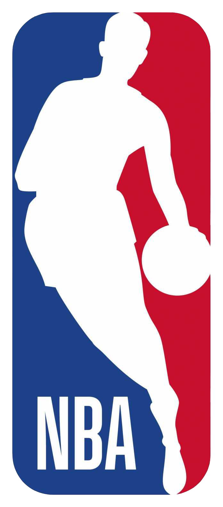
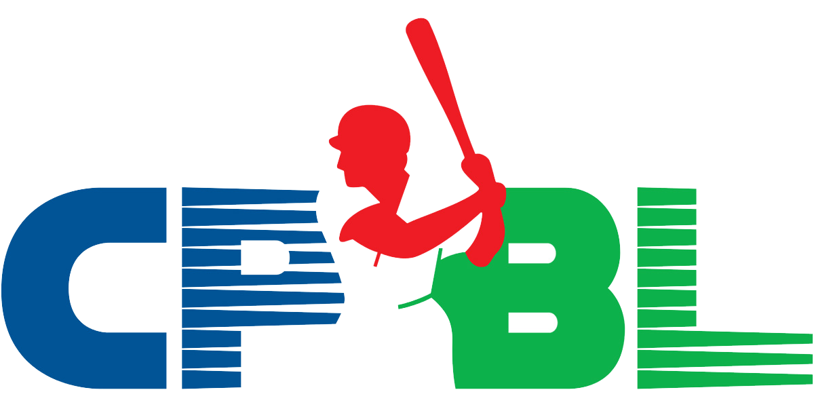
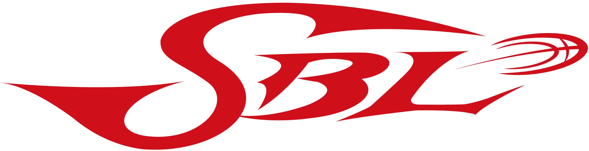

美國職棒大聯盟 Major League Baseball
美國職業棒球大聯盟（英語：Major League Baseball，縮寫：MLB），通稱美國職棒大聯盟，簡稱美
國職棒或大聯盟，是目前世界上最高水準的職業棒球賽事，由29支來自美國各地的球隊以及1支加拿大球隊
共30支球隊參與，北美四大職業運動之一。
美國職棒大聯盟由1876年成立的國家聯盟與1901年成立的美國聯盟所組成，在1903年時兩個聯盟達成
協議，正式承認彼此在美國職業棒球的對等地位並共同成立大聯盟。2000年兩者進一步合併且撤除各自的
行政單位，由雙方認定的大聯盟主席負責統一管理。
現今的美國聯盟實行指定打擊，國家聯盟則保持投手打擊。
https://www.mlb.com/
NBA National Basketball Association

國家籃球協會（英語：National Basketball Association，縮寫為NBA）是北美的男子職業籃
球組織，擁有30支球隊，分屬兩個分區：東區和西區；而每個分區各由三個分組（Division）組
成，每個分組有五支球隊。所屬球隊中除了一支來自加拿大的多倫多之外，其餘均位於美國。
NBA正式賽季於每年11月第一個星期二開始，分為例行賽、季後賽等兩大部分。例行賽為循
環賽制，每支球隊都要完成82場比賽；例行賽到次年的4月結束，每個聯盟的前八名將有資格進
入接下來進行的季後賽。季後賽採用七戰四勝賽制，共分四輪；季後賽的最後一輪也稱為總決
賽，由兩個聯盟的冠軍爭奪NBA的最高榮譽——總冠軍。整個NBA賽季當中，例行賽完結之後分
區冠軍不設獎盃，只給予得獎球隊錦旗一個，但聯盟冠軍及總冠軍均設有獎盃加錦旗。
NBA前身是1946年成立的美國籃球協會（簡稱BAA），1949年改為現名。NBA是北美四大職
業運動之一，又因美國在世界籃球界的領導地位，而被視為全世界水準最高的職業籃球賽事。
中華職業棒球大聯盟 CPBL

中華職業棒球大聯盟（簡稱中華職棒、中職、CPBL）是中華民國成立最早、以及目前唯一的職業棒
球聯盟，前身是1989年創立的「中華職業棒球聯盟」，創始球隊為統一獅、味全龍、三商虎、兄弟象，
2003年與台灣職棒大聯盟合併後改為現名。目前有統一7-ELEVEn獅、中信兄弟、Lamigo桃猿、富邦悍
將4支球隊，目前競賽場地則主要分布於臺南市南區、臺中市北屯區、桃園市中壢區、新北市新莊區等地
區，原本較偏向都市巡迴，但近年來開始改走屬地主義。
http://www.cpbl.com.tw/cpbl.html
超級籃球聯賽 SBL

超級籃球聯賽（英語：Super Basketball League，縮寫為SBL）是中華民國（台灣）一個半職業的
男子籃球聯盟，由中華民國籃球協會創設管理，目前共有裕隆納智捷、台灣啤酒、臺北達欣工程、富邦
勇士、金門酒廠、臺灣銀行、桃園璞園建築等七支球隊組成，為台灣現今男子籃球最高層次的籃球聯
賽。
http://sbl.choxue.com/